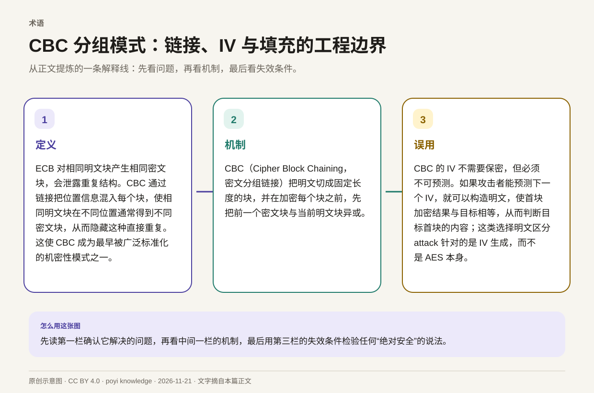

原理与机制
术语：CBC 分组模式（Cipher Block Chaining (CBC)）。CBC（Cipher Block Chaining，密文分组链接）把明文切成固定长度的块，并在加密每个块之前，先把前一个密文块与当前明文块异或。第一个块没有前一个密文块，因此使用初始化向量 IV 作为起始链接值：
C_1 = E_K(P_1 xor IV)
C_i = E_K(P_i xor C_{i-1}) (i >= 2)
P_1 = D_K(C_1) xor IV
P_i = D_K(C_i) xor C_{i-1} (i >= 2)
加密必须按顺序进行，因为 C_i 依赖 C_{i-1}；解密可以并行，因为每个 P_i 只依赖 C_i、C_{i-1} 和 IV。IV 不需要保密，但必须不可预测。可预测的 IV 会让攻击者判断两个消息的首块是否相同，或进行选择明文区分。CBC 定义在完整的块序列上。SP 800-38A 在 Appendix A 给出填充方法（例如 trailing bit complement），但不强制某一种应用层填充格式；具体选择属于协议或格式层。本文的教学实现采用 CMS 的填充规则：在末尾补 1 到块长个字节，每个字节的值等于补入的字节数。这样，16 字节的整数倍消息也会增加一个完整填充块，解密时才能无歧义地去掉填充。CBC 不改变底层分组密码的块大小或密钥长度。它只是把同一个 E_K 或 D_K 按链接规则重复使用。

为什么重要
ECB 对相同明文块产生相同密文块，会泄露重复结构。CBC 通过链接把位置信息混入每个块，使相同明文块在不同位置通常得到不同密文块，从而隐藏这种直接重复。这使 CBC 成为最早被广泛标准化的机密性模式之一。但 CBC 只提供机密性，不提供完整性。它既不能发现密文被修改，也不能发现填充被伪造；这些性质必须由协议层的 MAC 或 AEAD 提供。以为用了 CBC 就等于消息未被篡改，是模式层最常见的误解。CBC 的安全高度依赖两个工程细节：IV 如何产生，以及填充错误如何报告。算法公式正确，但 IV 可预测或错误信息可区分，仍然会导致实际攻击。理解 CBC 的价值，主要在于理解这两个边界。
应用与实例
CBC 是通用的机密性模式，适用于需要把任意长度数据分成块处理的存储和传输场景。SP 800-38A 面向「Federal agencies and non-government organizations」（联邦机构与非政府组织）的敏感信息保护，CBC 是其中定义的模式之一。CMS（Cryptographic Message Syntax）的内容加密流程使用这种块填充（可用于 CBC 等块模式）：加密前把内容补到块长的整数倍，填充字节的值等于补入字节数。这个规则使接收方可以在解密后检查并去除填充；它也意味着填充有效性本身是一个可被观察的信号。TLS 1.3 只保留 AEAD 套件，因此 CBC 不属于 TLS 1.3 的套件集合。较早的协议是否使用 CBC、如何使用 CBC，必须按各协议自己的版本和配置判断，CBC 是标准模式，推不出某个协议仍应使用 CBC。
边界与攻击面
CBC 的 IV 不需要保密，但必须不可预测。如果攻击者能预测下一个 IV，就可以构造明文，使首块加密结果与目标相等，从而判断目标首块的内容；这类选择明文区分 attack 针对的是 IV 生成，而不是 AES 本身。### 位翻转与可延展性
CBC 解密把 D_K(C_i) 与 C_{i-1} 异或。修改 C_i 会不可预测地破坏 P_i，但会让 P_{i+1} 的同一比特发生可预测翻转；修改 IV 则会可预测地翻转 P_1 的对应比特。攻击者不需要密钥就能对明文做受控修改，因此 CBC 的机密性不等于完整性。### 填充 oracle
如果解密端对填充有效和填充无效给出可区分的行为（不同的错误消息、不同的响应时间或不同的连接状态），攻击者就可以利用这个侧信道，逐字节恢复明文或伪造密文。Vaudenay 在 2002 年系统化了这类 padding oracle 攻击；修复方式不是换一个填充值，而是认证密文并在验证失败时统一拒绝。### 无完整性
CBC 本身没有认证标签。需要完整性时，必须外加 MAC（并正确处理加密与认证的顺序），或直接使用 AEAD。仅依赖 CBC 的协议必须自行定义重放防护、错误处理和密钥分离。CBC 不改变块大小。使用 64 位块的分组密码时，大量数据下密文块碰撞会变得可观：约 2^32 个块（32 GiB）时，生日碰撞概率已接近 39%。这不是 CBC 公式的缺陷，而是 64 位块在高数据量下的固有边界；使用 128 位块的分组密码可以把这个边界推远。本文的教学实现只演示 AES-128-CBC 的公式、官方向量和固定数据的结构性质。它不实现安全的 IV 生成、常量时间的填充校验、密钥管理、协议状态机或侧信道防护，不能用于生产环境。
历史与背景
1980 年，FIPS 81 为 DES 定义了 CBC 模式，使分组密码可以处理超过一个块的消息。2001 年，NIST SP 800-38A 把 CBC 推广到通用分组密码，并给出 AES 测试向量和 IV 要求。CBC 的长期使用也暴露了模式层的工程问题：IV 可预测、填充错误可区分、密文可延展。这些问题的共同点是，算法公式没有错，错的是模式与协议的交界处。后来的 AEAD 模式把机密性和完整性合并，TLS 1.3 也转向只使用 AEAD 套件。这段历史说明，CBC 不是过时的错误，而是一个边界清晰的基础模式：在正确使用 IV、填充和认证的前提下，它可以提供机密性；把这些前提省略，就会把模式的性质变成攻击面。
逐步示例与核验
SP 800-38A 附录 F.2 给出 AES-128-CBC 的四块示例。密钥是 2b7e151628aed2a6abf7158809cf4f3c，IV 是 000102030405060708090a0b0c0d0e0f，明文四块是：
6bc1bee22e409f96e93d7e117393172a
ae2d8a571e03ac9c9eb76fac45af8e51
30c81c46a35ce411e5fbc1191a0a52ef
f69f2445df4f9b17ad2b417be66c3710
对应密文四块是：
7649abac8119b246cee98e9b12e9197d
5086cb9b507219ee95db113a917678b2
73bed6b8e3c1743b7116e69e22229516
3ff1caa1681fac09120eca307586e1a7
本文用 Node/OpenSSL 复现这四块，并用同一 IV 解密回原文。### IV 的作用
同一密钥和同一明文首块，换一个 IV 会得到不同的首块密文；使用相同 IV 则会得到相同首块密文。翻转 IV 的一个比特，解密后的首块会在同一位置翻转，而后续块不受影响。这说明 IV 只影响首块，却决定了首块的机密性边界。### 位翻转
对两块的 CBC 密文翻转第一块的一个比特，解密后第一块明文被破坏，第二块明文的同一比特被翻转。验证程序记录这两个效果，并确认第三块之后不受影响（当密文更长时）。### 填充
20 字节明文按 16 字节块填充到 32 字节，末 12 字节都是 0x0c；16 字节明文会填充到 32 字节，末 16 字节都是 0x10。解密后去除填充必须恢复原长度；如果填充值非法，安全实现应统一拒绝，而不是返回可区分的错误。
参考出处
- Wikipedia search entry for CBC 分组模式. https://zh.wikipedia.org/w/index.php?search=CBC%20%E5%88%86%E7%BB%84%E6%A8%A1%E5%BC%8F
- RFC 4949: Internet Security Glossary, Version 2. https://www.rfc-editor.org/rfc/rfc4949